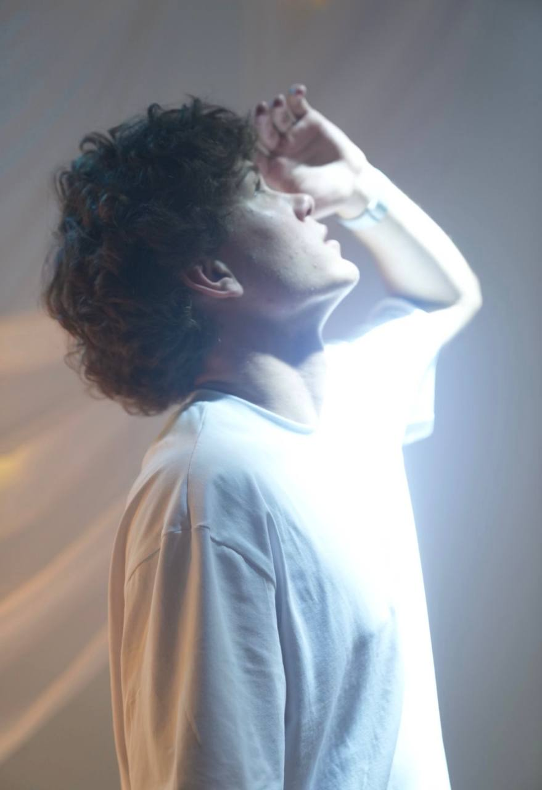
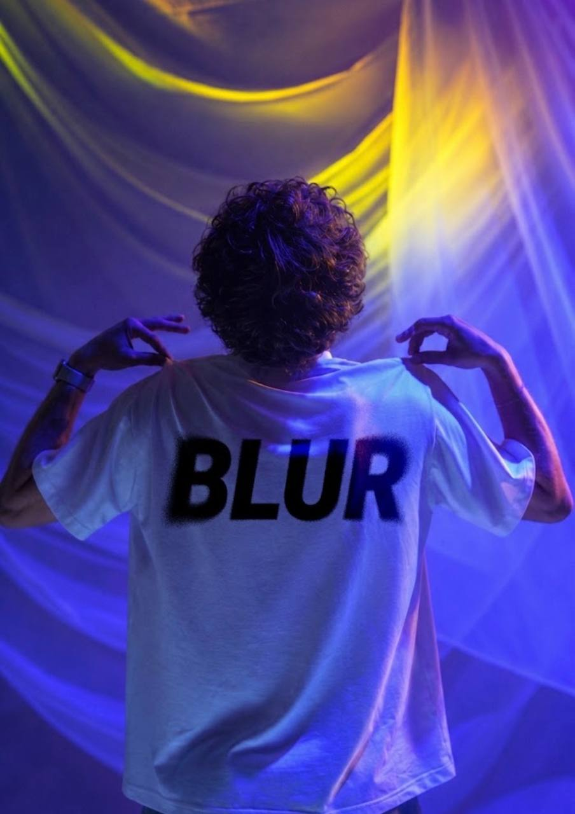
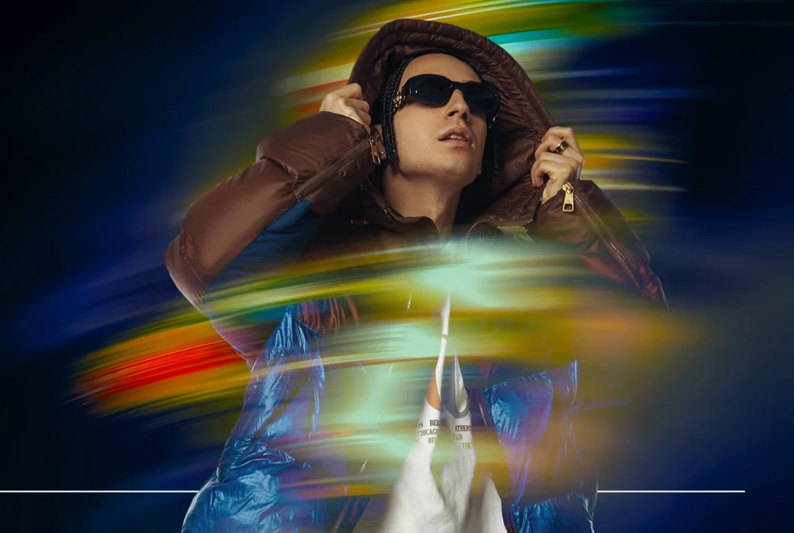
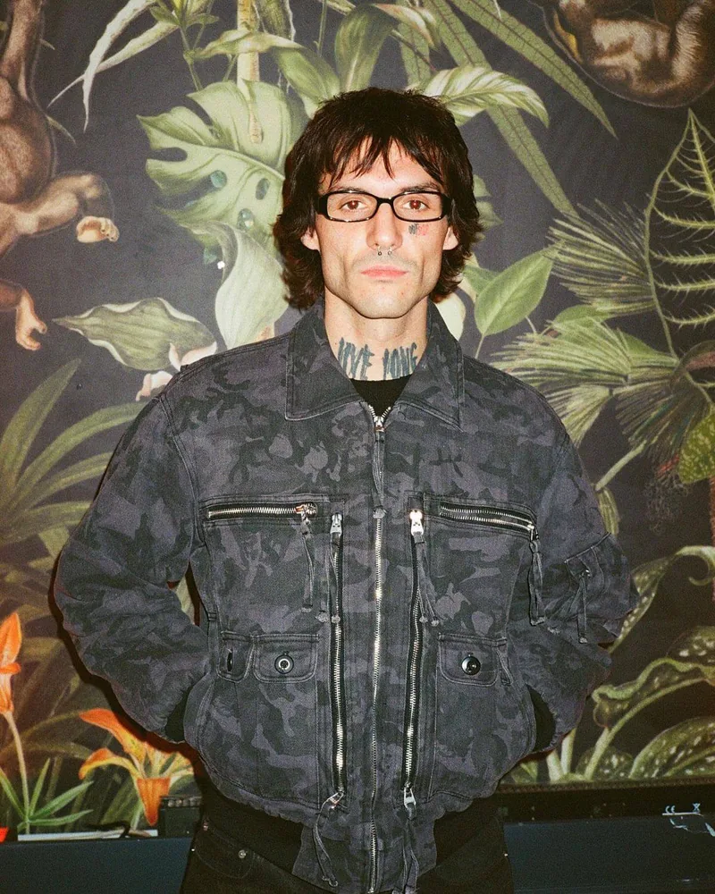
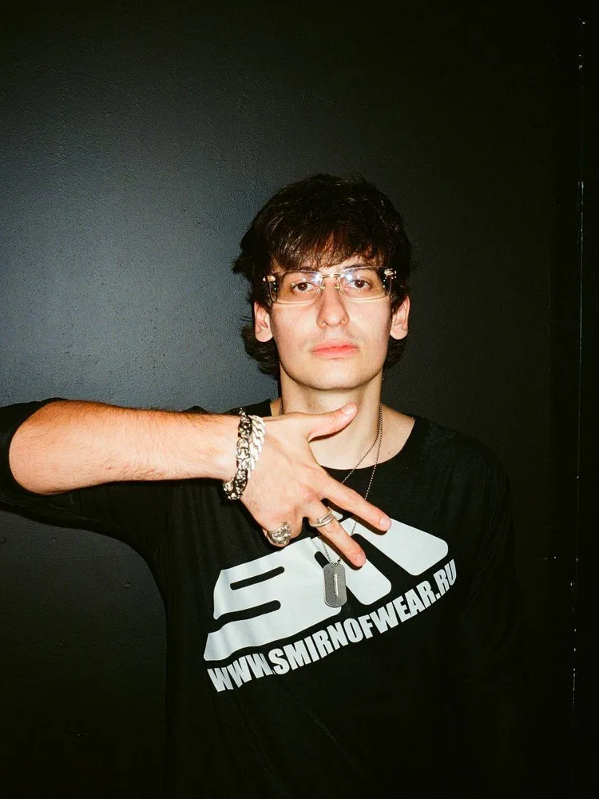
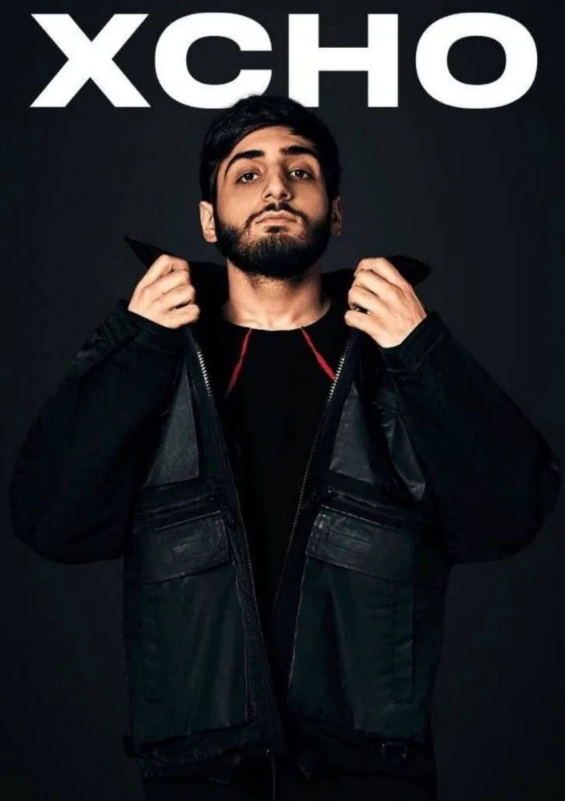
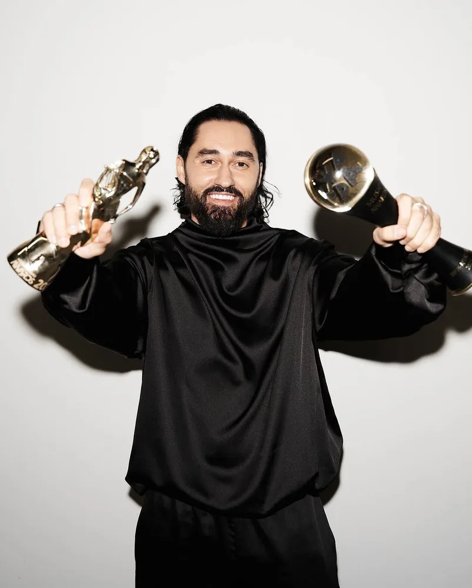
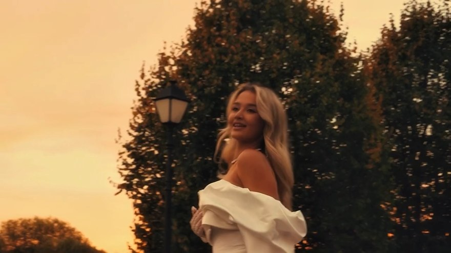
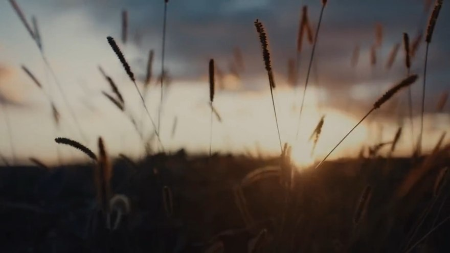

Александр Овечкин
Лучший снайпер в истории НХЛ — 900+ голов
 EVENTS
EVENTSBLUR — больше, чем просто съёмка.

BLUR PRODUCTION / 2026
Наш production — это объединение молодых и талантливых специалистов, увлечённых созданием качественного визуального контента.
В нашу команду входят операторы, фотографы, монтажёры, клипмейкеры и креативщики, которые знают своё дело, обладают профессиональными навыками и готовы проявлять себя в интересных проектах.
Мы объединяем людей с разным опытом и творческим видением, ценим инициативность, ответственность, профессионализм и вовлечённость в работу.
Артисты и публичные личности, с которыми мы работали.
Лучший снайпер в истории НХЛ — 900+ голов

Рэп · «Хочу к тебе», «Да или нет»

«МАЙ МАЙ» — 11 млн прослушиваний на SoundCloud

Forbes «30 до 30» 2024 · номинант

Автор хита «Ты и я»

Хиты «Капкан», «Кислород», «Соло»
Снимаем ваш день, пока он происходит. Сохраняем взгляды, жесты и тихие моменты, которые легко пропустить.
Обсудить съёмку свадьбы

Подключимся на том этапе,
на котором мы вам нужны.
Организуем съёмочный день и передадим исходники. Дальше материал может монтировать ваша команда.
Обсудить съёмку ФОРМАТ / 02Уже всё сняли? Отберём дубли, соберём историю, настроим цвет и звук. Вы получите готовый ролик.
Обсудить монтаж ФОРМАТ / 03Берём на себя весь цикл: от идеи и плана съёмки до финального фильма и версий для соцсетей.
Обсудить проектНажмите на кружок — включится звук. Скоро здесь появятся новые приветы и напутствия наших героев.